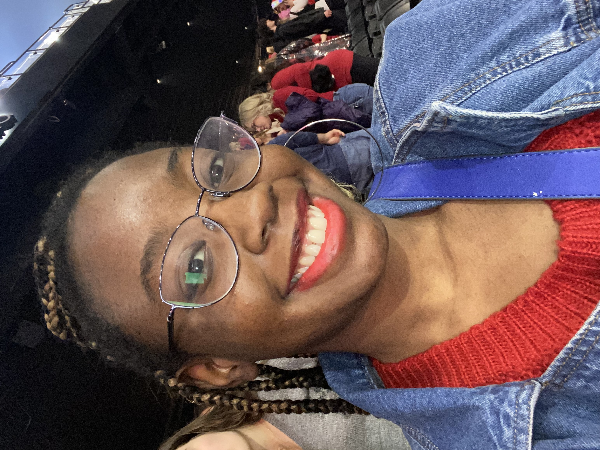

<!DOCTYPE html>
<html lang="en">

<head>
	   <meta charset="UTF-8">
   <title>Aicha Bangoura's Resume</title>
   </head>
    <style>
        body {
            background-color: lightblue;
        }

        h1 {
            color: darkblue;
            text-align: center;
        }
    </style>

   <body>

   </body>


</html>


<div id="name">Aicha Bangoura</div>

<br>
<strong>Print journalist & video creator</strong>

<ul>
<li><a href="mailto:Aichamb@terpmail.umd.edu">Email me</a></li>
<li><a href="https://www.linkedin.com/in/aicha-m-a-b-390b90249/?trk=opento_sprofile_details">LinkedIn</a></li>
<li><a href="https://x.com/justinitials15 ">Twitter</a></li> 
<li><a href="https://github.com/Aicha27mad/JOUR405">GitHub</a><li>
</ul> 

<P> Student studying journalism at a four-year college
the University of Maryland. Has covered several events and news 
for a couple publications. Serves diligence in responding to 
emails and calls asap. Displays optimistic thinking in difficult tasks and is ready
to work the way up. Seeking a job in the journalism field. 
</P>

<h2>EXPERIENCE</h2>

<h3>Videographer (coursework)</h3>
<h4>University Of Maryland, College Park, MD</h4>
<h5>Jan 2024 - Apr 2024</h5>
<p> worked with pre-production tasks such as, storyboarding, and location scouting.
	Reached out to program leaders/coordinators/hosts
	Used camera equipment (Dslr/Broadcast Camera)</p>


 <h3>Print Freelancer</h3>
 <h5>2023 - present</h5> 
		<p>Started out working with The Black Explosion newspaper and wrote several stories pertaining to culture and entertainment. 
		Wrote for Stories Beneath the Shell newspaper and pitched stories that were seldom and had depth.
		Writes for Montgomery County Sentinel Publication
		Attended general assignment meetings.
		I worked on a deadline.
		Captured images that told the story.
		Frequently updated the editors on a piece.</p>

<h3>Copy editor (SBS)</h3>
<h5>2025- present</h5>
<p> Signs up to copy edit a piece
	edits and suggests revisions to other reporters stories
	fact-checks names and information
	updates editor-in-chief about edits</p>

<h3>Theatre Usher - 
<h5>2022 -  Nov 2022</h5>
<p>Enforced theater rules limiting photography and cell phone use.
 assisted patrons with locating seats, restrooms or concessions.
 helped maintain security by verifying individual and group tickets.
 acted as liaison between event staff, performers, and attendees for any issues that arose during the event.</p>

<h2>Education:</h2> 
<ul>
	High School diploma, Global Studies Academy, Wheaton High, 2020

	Bachelor of Arts, Journalism, University of Maryland, College Park, 2026 
</ul>

<h2>SKILLS</h2>
	•	- Pitching stories
	•	- Eloquent Speaker
- Good listener
- Researches for relevance and accuracy
- Can edit videos using iMovie and Premiere Pro
- Gives honest and constructive feedback 
- Works well with community

</h3>body>

</html>